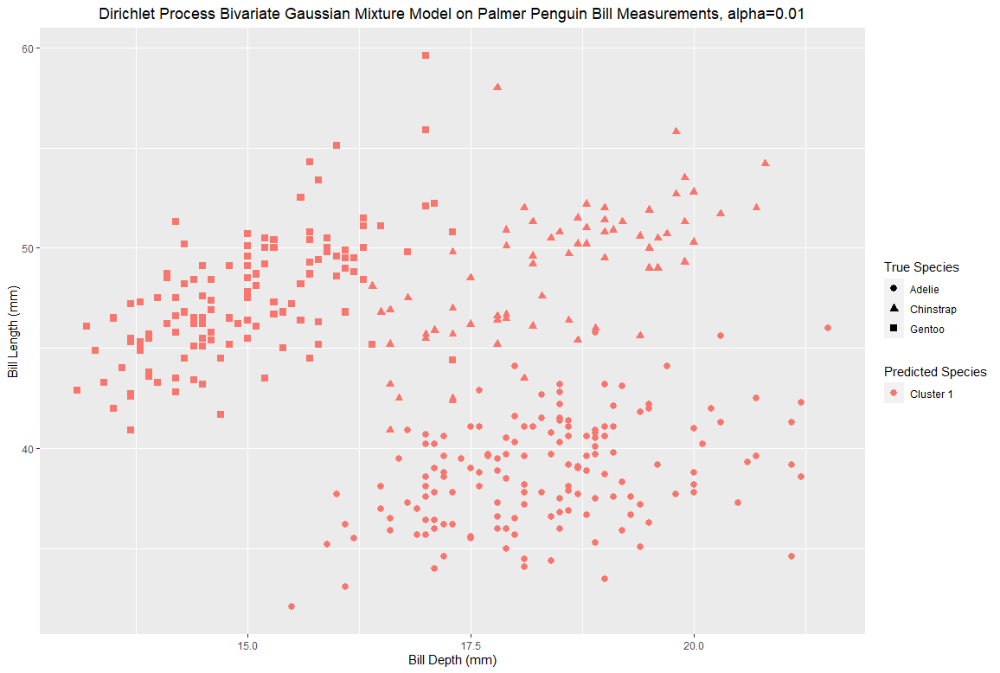

The Dirichlet Process
Visual Overview and Role in Nonparametric Bayesian Modeling
Introduction
Learning from data is powering the modern world. In the age of big data and abundant computational resources, statistics and machine learning have become ubiquitous. Modern statistical modeling can help us accomplish a wide breadth of useful tasks, such as regression, classification, or clustering. In regression models, we seek to estimate the relationship between the response variable and its predictors. In classification models, we seek to classify data points into classes. This is typically done in a supervised setting, in which the model is fit using true class labels. Clustering seeks to partition the data into a set of classes in an unsupervised setting, that is, to group the data such that points in the same group have similar properties to one another, without knowing any true class labels.
In this article, we discuss a class of models used for clustering called Dirichlet process mixture models, which allow us to cluster data according to its natural structure without the need to presuppose a quantity of clusters.
Dirichlet process mixture models fall into the category of Bayesian nonparametric models. To understand this term, we examine both descriptors:
A Bayesian model is a model in which the model parameters are thought of as random variables, and inference is performed using Bayes’ theorem: for parameters \(\theta\) and observed data \(y\), we have \[p(\theta|y)=\frac{p(y|\theta)p(\theta)}{p(y)}\,.
\label{bayesthm}\] From Bayes’ theorem, we observe that the posterior density \(p(\theta|y)\), the density of the distribution on the parameter given the observed data, is proportional to the product of the prior density \(p(\theta)\), the density of the distribution of the parameter, and the likelihood \(p(y|\theta)\) of the observed data having been observed.
A nonparametric model is a model in which the number of model parameters scales with the data on which it is fit. In this sense, it can be thought of as a model in which the parameter space is infinite-dimensional rather than finite-dimesional. Note that nonparametric models still have parameters, despite the name. Examples of parametric models include binomial models and Gaussian models.
Thus, a Bayesian nonparametric model embraces both of these descriptors– they are models in which the parameters are a random vector in an infinite dimensional space (theoretically speaking), with inference performed according to Bayes’ theorem.
While this category describes a broad class of models, models commonly fit in two subcategories: regression models, which make use of Gaussian processes, and hierarchical models, which make use of the Dirichlet process.
The Dirichlet process mixture model, the principal model in the latter class, will be our focus. These models fit data to a mixture of parametric component distributions with the key property that the number of components grows with the data, and is fitted to the data. This nonparametric nature allows the model to be used to cluster data in which the number of clusters is not known a priori, and is thought to grow with the size of the data. As one might posit, this type of model has a variety of relevant applications: galaxy localization, grouping documents by topic, and neuroimaging problems .
The Dirichlet process itself is a probability distribution whose realizations are discrete probabilities distributions themselves. It is used as a prior distribution on the mixing measure in Dirichlet process mixture models. First, we will provide preliminary primers on the topics of Bayesian inference and exchangeability, and then motivate and build up the theory of the Dirichlet process by first discussing limiting proportions of Polya’s urn models and the extension to the Blackwell-MacQueen urn scheme. After this, we discuss Sethuraman’s stick-breaking construction and elaborate on properties of the Dirichlet process. After this, we discuss mixture modeling and build up from the finite case to motivate the Dirichlet process as a prior in nonparametric Bayesian models. Finally, we give examples of Dirichlet process mixture models fit to some real data, discuss approximate inference for these classes of models, and future directions for the interested reader.
Bayesian Inference
In order to work up to hierarchical Bayesian models like the Dirichlet process mixture model, we first refer back to the basics of Bayesian inference. Model parameters are viewed as random variables rather than fixed, unknown quantities, and we seek to perform inference on these parameters through the usage of Bayes’ theorem.
One of the simplest examples of Bayesian inference involves binomial data, like flipping a coin. Say we have a coin with a probability \(\theta\) of yielding heads. After flipping the coin \(n\) times, we can calculate the posterior distribution on \(\theta\) given our observed flips. We now define the beta distribution, which will play an instrumental role in this example.
Definition.
We define the \(\textit{Beta}(\alpha,\beta)\) distribution , with \(\alpha>0\), \(\beta>0\), to have the density \[p(x) = \frac{1}{\mathrm{B}(\alpha,\beta)}x^{\alpha-1}(1-x)^{\beta-1} \propto x^{\alpha-1}(1-x)^{\beta-1}
\label{betadensity}\] where \(\mathrm{B}:\mathbb{R}\times\mathbb{R}\to\mathbb{R}\) denotes the beta function, defined as \[\mathrm{B}(\alpha,\beta) := \int_0^1 t^{\alpha-1}(1-t)^{\beta-1}\,\mathrm{d}t = \frac{\Gamma(\alpha)\Gamma(\beta)}{\Gamma(\alpha+\beta)}\,.\]
We will use the beta distribution as our prior distribution on \(\theta\) for Bayesian inference (that is, \(\theta\sim\text{Beta}(\alpha,\beta)\)). If the reader is not familiar with this problem, they may wonder why we chose to use a Beta distribution as the prior on \(\theta\). This is because for binomial data like this, a beta distribution is a conjugate prior. This means that the posterior on \(\theta\) given some observed data will be in the same parametric family as the prior, so in this case, the posterior will always be a beta distribution as well, with different parameters. To see this, suppose we observe \(y\) heads flips out of \(n\) total flips, and our prior on \(\theta\) is a \(\text{Beta}(\alpha,\beta)\). Then we have \[\begin{aligned}
p(\theta\lvert y) &= \frac{p(\theta)p(y|\theta)}{p(y)} \\[1em]
&= \frac{p(\theta)p(y|\theta)}{\int_0^1 p(\theta)p(y|\theta)\,\mathrm{d}\theta} \\[1em]
&=\frac{\binom{n}{y}\theta^y(1-\theta)^{n-y} \frac{\Gamma(\alpha + \beta)}{\Gamma(\alpha)\Gamma(\beta)}\theta^{\alpha-1}(1-\theta)^{\beta-1}}{\int_0^1\binom{n}{y}\theta^y(1-\theta)^{n-y}\frac{\Gamma(\alpha+\beta)}{\Gamma(\alpha)\Gamma(\beta)}\theta^{\alpha-1}(1-\theta)^{\beta-1}\,\mathrm{d}\theta} \\[1em]
&= \frac{\theta^{y+\alpha-1} (1-\theta)^{n+\beta-y-y}}{\int_0^1\theta^{y+\alpha-1} (1-\theta)^{n+\beta-y-y} } \\[1em]
&= \frac{\Gamma(\alpha+\beta)}{\Gamma(\alpha)\Gamma(\beta)}\,\theta^{\alpha+y-1}(1-\theta)^{\beta+n-y-1}
\label{betabinomialconj}\end{aligned}\] which is exactly the density of a \(\text{Beta}(\alpha+y,\beta+n-y)\) random variable . In this example, we see that we can obtain the posterior simply by incrementing the first parameter \(\alpha\) by the number of successes (heads) observed and the second parameter \(\beta\) by the number of failures (tails) observed.
To see this in action, observe the visualization below. This shows the \(\text{Beta}(\alpha,\beta)\) prior distribution on \(\theta\), and updates itself to the posterior distribution on \(\theta\) given the observed data with each flip of the coin. To reset it, simply change the true success probability or a parameter of the prior.
As we see, after flipping the coin more and more, the mass of the posterior density concentrates around the true success probability. Notice that obtaining enough data can correct a poorly chosen prior on \(\theta\), but a sharper prior requires more data to change as it describes a higher confidence around a certain value.
With the previous example in mind, we can consider the multinomial version of the same problem. For example, we might have a \(k\)-sided die, and we wish to perform inference on \(\theta\in S_{k-1}:=\{x\in\mathbb{R}^k:\sum_{i=1}^k=1\}\), the vector of probabilities of the die landing on each face. We now define the Dirichlet distribution, which is essentially a multivariate extension of the beta distribution.
Definition.
We define the \(\text{Dirichlet}(\alpha)\) distribution , \(\alpha=(\alpha_1,\ldots,\alpha_k)\), \(\alpha_i>0\), \(i=1,\ldots,k\) to have density \[p(x) = \frac{\Gamma\left(\sum_{i=1}^k \alpha_i\right)}{\prod_{i=1}^k\Gamma(\alpha_i)}\prod_{i=1}^k x_i^{\alpha_i-1}\propto \prod_{i=1}^k x_i^{\alpha_i-1}\,.\]
Following the previous problem, we can do inference in the same manner, with the Dirichlet distribution being the conjugate prior for multinomial data. Explicitly, consider a \(\text{Dirichlet}(\alpha)\) prior on \(\theta\), where \(\alpha=(\alpha_1,\ldots,\alpha_k)\). After observing a number of rolls of the die, we let \(y_i\) be the number of observed rolls of face \(i\), for \(i=1,\ldots,k\). Then the posterior on \(\theta\) given our observed data follows a \(\text{Dirichlet}(\alpha_1+y_1,\ldots,\alpha_k+y_k)\). It can be viewed exactly as a multivariate extension of the beta-binomial problem. We see an example below, which would correspond to a three sided die with color coded faces.
Exchangeability
Before building up to the Dirichlet process through Polya’s urn, we will discuss a property of data called exchangeability and an important result which will be instrumental in establishing the existence of the Dirichlet process.
The reader is likely to be familiar with the concept of independence.
Definition.
Two events \(A\) and \(B\) (measurable subsets of the sample space) are independent if and only if \[P(A\cap B)=P(A)P(B)\,.\]
This notion can be extended to collections of sets by saying the collections \(\mathcal{F}_1,\mathcal{F}_2\) are independent if for every \(E_1\in\mathcal{F}_1\), \(E_2\in\mathcal{F}_2\), \(E_1\) and \(E_2\) are independent.
Finally, two random variables \(X,Y\) are independent if the \(\sigma\)-algebras generated by them, \(\sigma(X)\) and \(\sigma(Y)\), are independent.
We can give a more intuitive characterization as well: real-valued random variables \(X,Y\) are independent if and only if their joint cumulative distribution function (CDF) equals the product of their marginal CDFs, \[F_{X,Y}(t,s)=F_X(t)F_Y(s)\] for all \(t,s\) in the respective sample spaces. If both \(X\) and \(Y\) have a density, we can also characterize independence using them in a similar way \[p_{X,Y}(t,s)=p_X(t)p_Y(s)\] for all \(t,s\) in the respective sample spaces.
Instead of independence, we are interested in the weaker condition of exchangeability, which is another property of finite or countable sets of random variables.
Definition.
The random variables \(X_1,\ldots,X_n\) are exchangeable if and only if for any permutation \(\sigma\in S_n\) (the symmetric group on \(n\) elements), the joint distribution of \(X_{\sigma(1)},\ldots,X_{\sigma(n)}\) is the same as the joint distribution of \(X_1,\ldots,X_n\). A countable sequence of random variables \(\{X_n:n\in\mathbb{N}\}\) is exchangeable if the joint distribution is the same under any finite permutation of the indices. Equivalently, we may also say that if is exchangeable if \(X_1,\ldots,X_k\) is exchangeable for every \(k\in\mathbb{N}\).
It is important to note that while independence implies exchangeability, the converse does not hold– we will see an example of this soon!
DeFinetti’s representation theorem
The reason why we are discussing exchangeable random variables is due to a characterization by Bruno De Finetti . This theorem has many forms, some more general than others. We begin with O’Neill’s formulation of the representation theorem and then restrict it to the case of \(\{0,1\}\)-valued random variables, such as Bernoulli random variables or indicator random variables.
Theorem.
Let \(\{X_n:n\in\mathbb{N}\}\) be a sequence of random variables. The sequence \(\{X_n:n\in\mathbb{N}\}\) is exchangeable if and only if for any \(n\in\mathbb{N}\), \[F(X_1,\ldots,X_n) = \int \prod_{i=1}^n F_X(X_i)\,\mathrm{d}P(F_X)\,.\] where \(F_X\) is the limiting empirical distribution defined as \[F_X(t) = \lim_{k\to\infty} \frac{1}{k}\sum_{i=1}^k \mathbb{I}_{\{x_i \leq t\}}\] when this limit exists. If \(F_X\) is indexed by a parameter \(\theta\), and has a density, we also have \[P(X_1=x_1,\ldots,X_n=x_n) = \int \prod_{i=1}^n p(x_i|\theta)\,\mathrm{d}F(\theta)\,.\] Intuitively, this means that exchangeable random variables are independent and identically distributed, conditioned on their limiting empirical distribution.
A proof in this general form is available in the appendix of O’Neill (2009) . Now, for a more concrete result that will suit our uses, we restrict O’Neill’s formulation to the case of \(\{0,1\}\)-valued random variables.
Theorem.
Let \(\{X_n:n\in\mathbb{N}\}\) be a sequence of \(\{0,1\}\)-valued random variables. This sequence is exchangeable if and only if for any \(n\in\mathbb{N}\), \[P(X_1=x_1,\ldots,X_n=x_n)=\int_0^1 \theta^y(1-\theta)^{n-y}\,\mathrm{d}F(\theta)
\label{defin}\] where \(y=\sum_{i=1}^n x_i\) and \(F(\theta)\) is the distribution function of the limiting empirical distribution, defined as \[F(\theta) := P(\overline{X}_\infty\leq \theta)\] for \[\overline{X}_\infty := \lim_{k\to\infty} \frac{1}{k}\sum_{i=1}^k X_i\] when this limit exists.
Now, we will switch gears to discuss a model known as Polya’s urn, which will not only provide us with a nontrivial example of exchangeable random variables (that is, an example in which they are exchangeable but not independent), but also serve as a vehicle towards understanding the Dirichlet process.
Polya’s Urn Processes
Suppose an urn contains two colors of balls. When considering finite or infinite sampling from the urn, it is typical to consider sampling with replacement and sampling without replacement. Under these conditions, the number of balls drawn of a certain class follows a binomial or hypergeometric distribution respectively. In the simple Polya’s urn model, we consider a third option– sampling with replacement and the addition of another object of the same class into the model. This type of process operates in a ‘rich get richer’ fashion, as drawing objects from one class makes this class more likely to be drawn in the future.
There exist many generalizations of this model– cases with any finite number of classes, countably many classes, as well as generalizations in which any integer number of balls are added/removed from the urn at each draw. For our purposes, we consider the process where just one additional ball is added at each draw.
Let’s see what draws from a Polya’s urn process look like. Considering an urn with three colors of balls, set the initial quantities in the urn and use the buttons to draw samples from the urn. Change the initial conditions to reset the demonstration.
This model acts as a stepping stone between familiar material and the Dirichlet process. In order to understand this transition, we will study some of the properties of Polya’s urn. Primarily, this provides an excellent example of exchangeable random variables. To gain a better understand of the model, we will discuss an urn with just two colors of balls, initially containing \(a\) black and \(b\) white balls. As we move forward, we will extend the results from this case first to the case with finitely many colors, and then to include an unbounded quantity of colors, which will give rise to the Dirichlet process.
Let \(X_1,\ldots, X_n\) be defined such that \(X_k\) is the indicator random variables for the event of the \(k\)th draw being a black ball. That is, \[X_k=\begin{cases}1 & \text{the $k$th draw is a black ball}\\0 & \text{the $k$th draw is a white ball}\end{cases}
\label{polyaindicatordef}\] Observe that \(X_1,\ldots,X_n\) are not independent as each \(X_k\) depends on \(\{X_j:j=1,\ldots,k-1\}\), since the probability of drawing a black ball at time \(k\) depends on the balls drawn at every previous time step. For example, if we begin with one black and one white ball, and draw a black ball on the first draw, the second draw will be a black ball with probability \(\frac{2}{3}\). However, if we drew a white ball on the first draw, the probability of drawing black on the second would be only \(\frac{1}{3}\).
\(X_1,\ldots,X_n\), the random variables corresponding to draws from the urn process, are exchangeable.
Proof. Explicitly, the joint distribution of \(X_1,\ldots,X_n\) is given by \[\begin{aligned}
\begin{split}
&P(X_1,\ldots,X_n=x_1,\ldots,x_n) \\
=&P(X_1=x_1)P(X_2=x_2\,|\,X_1=x_1)\cdots P(X_n=x_n\,|\,X_1,\ldots,X_{n-1}=x_1,\ldots,x_{n-1}) \\
=&\left(\frac{a}{a+b}x_1+\frac{b}{a+b}(1-x_1)\right)\cdot\left(\frac{a+x_1}{a+b+1}x_2+\frac{b+(1-x_1)}{a+b+1}(1-x_2)\right)\cdots \\
& \qquad\qquad\qquad\qquad\qquad\qquad\,\cdot \left(\frac{a+\sum_{i=1}^{n-1}x_i}{a+b+n-1}x_n + \frac{b+(n-1-\sum_{i=1}^{n-1}x_i)}{a+b+n-1}(1-x_{n-1})\right) \\
=&\frac{a(a+1)\cdots(a+\sum_{i=1}^nx_i-1)\quad\cdot\quad b(b+1)\cdots(b+(n-\sum_{i=1}^nx_i-1))}{(a+b)(a+b+1)\cdots(a+b+n)} \\
=&\frac{a^{\overline{y}} b^{\overline{n-y}}}{(a+b)^{\overline{n}}} \\
=& \frac{\Gamma(a+y)\Gamma(b+n-y)}{\Gamma(a+b+n)}\frac{\Gamma(a+b)}{\Gamma(a)\Gamma(b)} \\
=& \frac{B(a+y,b+n-y)}{B(a,b)}
\end{split}
\label{polyajointdist}\end{aligned}\] where \(y=\sum_{i=1}^nx_i\), the number of black balls drawn in total, \(z^{\overline{m}}=z(z+1)\cdots(z+m-1)\) denotes the rising factorial, \(\Gamma(\cdot)\) denotes the gamma function, and \(B(\cdot,\cdot)\) denotes, as before, the beta function. Thus, we see explicitly the lack of dependence on individual draws and therefore the exchangeability of the sequence. ◻
As we saw above, the quantity \[\sum_{i=1}^nX_i\,,\] the total number of black balls drawn after \(n\) draws, is sufficient to determine the joint distribution of \(X_1,\ldots,X_n\). That is, \[P\left(X_1,\ldots,X_n=x_1,\ldots,x_n\,|\,X_1,\ldots,X_n\right)=P\left(X_1,\ldots,X_n=x_1,\ldots,x_n\,\Big|\,\sum_{i=1}^nX_i\right)\,.\] Intuitively, the joint distribution of \(X_1,\ldots,X_n\) depends just on \(\sum_{i=1}^nX_i\) rather than \(X_1,\ldots,X_n\). We note that this is actually a characterization of exchangeability for \(\{0,1\}\)-valued random variables.
Polya’s urn convergence
Using this exchangeability property of the Polya’s urn model, we seek to answer a natural question of Polya’s urn: its behavior as the number of draws from the urn gets very large. In particular, we wish to determine the limiting empirical distribution of draws of the urn, which describes exactly the limiting proportion of balls of a specific color after infinitely many draws. It turns out, thanks to exchangeability, we can apply De Finetti’s theorem to help us determine this limiting distribution. Define \[\overline{X}_k := \frac{1}{k}\sum_{i=1}^k X_i\,,\] and \[\overline{X}_\infty=\lim_{k\to\infty}\overline{X}_k=\lim_{k\to\infty}\frac{1}{k}\sum_{i=1}^k X_i\] the limiting proportion of black balls that have been drawn.
The proportion of black balls in the urn converges in distribution to \(\text{Beta}(a,b)\)
After conditioning on this limiting measure, draws from the urn are independent and identically Bernoulli distributed. That is, we have \[P(X_1=x_1,\ldots,X_n=x_n\,|\,\overline{X}_\infty = \theta)=\theta^y(1-\theta)^{n-y}\,,\] where \(y=\sum_{i=1}^n x_i\), or equivalently \[P\left(\sum_{i=1}^nX_i = y\,|\,\overline{X}_\infty=\theta\right) = \binom{n}{y} \theta^y(1-\theta)^{n-y}\] which can also be stated as \[\sum_{i=1}^nX_i \,\Big|\,\overline{X}_\infty \sim \text{Binomial}\left(n,\overline{X}_\infty\right)\,.\]
Proof. First, in order to make sure that \(\overline{X}_\infty\) is well-defined, we need to ensure convergence of the sequence \(\{\overline{X}_n:n\in\mathbb{N}\}\). To do this, we examine a property of this sequence: \[\begin{aligned}
E[\overline{X}_{n+1}|\overline{X}_1,\ldots,\overline{X}_n] &=
\left(\frac{n\overline{X}_n+1}{n+1}\right)\left(\overline{X}_n\right) + \left(\frac{n\overline{X}_n}{n+1}\right)\left(1-\overline{X}_n\right) \\
&= \frac{n\overline{X}_n^2 + \overline{X}_n + n\overline{X}_n - n\overline{X}_n^2}{n+1} \\
&= \overline{X}_n\,,\end{aligned}\] so \(\{\overline{X}_n:n\in\mathbb{N}\}\) is a martingale. If the reader is not familiar with martingales, they describe stochastic processes with the above property: their conditional expectation given all previous states is exactly equal to the most recent state. This concept was initially developed for the mathematical formalization of gambling. With this in mind, we can apply a fundamental result in martingale theory, that being Doob’s martingale convergence theorem , which tells us that \(\{\overline{X}_n:n\in\mathbb{N}\}\) converges almost surely to some random variable with finite expectation.
Moving forward, since each \(X_k\) is \(\{0,1\}\)-valued and exchangeable, as we have shown earlier, De Finetti’s theorem implies that \[P(X_1=x_1,\ldots, X_n=x_n) = \int_0^1 \theta^y (1-\theta)^{n-y}\,\mathrm{d}F(\theta)\] where \(y=\sum_{i=1}^n x_i\) and \(F(\theta)=P(\overline{X}_\infty\leq \theta)\) is the distribution function of the limiting proportion of black balls. In addition, we have an expression for the joint distribution from earlier. Equating these, we observe \[\int_0^1 \theta^y (1-\theta)^{n-y}\,\mathrm{d}F(\theta)=\frac{B(a+y,b+n-y)}{B(a,b)}\,.\] Using the definition of the beta function, we therefore observe \[\begin{aligned}
\int_0^1 \theta^y(1-\theta)^{n-y}\,\mathrm{d}F(\theta)&=\frac{1}{B(a,b)}\int_0^1 \theta^{a+y-1}(1-\theta)^{b+n-y-1}\,\mathrm{d}\theta \\
&= \int_0^1\left(\theta^y(1-\theta)^{n-y}\right)\left(\frac{1}{B(a,b)}\theta^{a-1}(1-\theta)^{b-1}\right)\,\mathrm{d}\theta\end{aligned}\] Since the quantity in parentheses on the right is continuous as a function of \(\theta\), the Riemann integral on the right is equivalent to the Riemann-Stieltjes integral on the left, where \(F(\theta)\) is the antiderivative of the quantity in parentheses. Furthermore, this quantity is exactly the density of a \(\text{Beta(a,b)}\) random variable, so \(F(\theta)\) is the distribution function of a \(\text{Beta}(a,b)\) random variable. Therefore, we have used De Finetti’s theorem to show the desired result, that \[\overline{X}_\infty\sim \text{Beta}(a,b)\,.\] The second claim follows directly from O’Neill’s formulation of De Finetti’s theorem. ◻
Now that we understand this result in the case of the urn with two colors of balls, we seek to generalize. If the urn has \(k\) finitely many colors/classes, an analogous result will hold as well. We let \(X_n:=(X^{(1)}_n,\ldots,X^{(k)}_n)\) denote the proportions of balls of each color in the urn at time \(n\). Similarly to the previous case, given a vector of initial starting quantities \(\alpha=(\alpha_1,\ldots,\alpha_k)\), we have \[\lim_{n\to\infty} \frac{1}{n} \sum_{i=1}^n X_n = \overline{X}_\infty \in L^1\] and \[\overline{X}_\infty\sim\text{Dirichlet}(\alpha)\,.\]
We can see an example of this in the visualization below.
Limiting proportions of each colors are drawn from the urn on the right, and added to the histogram on the left. As we see, the distribution of these limiting proportions converges to the Dirichlet distribution with parameter corresponding to the initial conditions.
Note that we cannot truly simulate a draw of the limiting proportions, we must instead truncate the sequence at some point. However, as we see, this still provides a good approximation of the limiting proportion.
Blackwell-MacQueen urn scheme
Finally, we can extend this result to once again to the case with countably many colors/classes, known as the Blackwell-MacQueen sampling scheme. Suppose the urn is now filled with \(\alpha\) black balls. At each time interval, we draw a ball from the urn. If a black ball is drawn, we replace the black ball and add an additional ball of a new color. If a non-black ball is drawn, we follow the standard procedure of replacing that ball and adding an additional ball of the same color. In essence, this is an extension of the urn scheme to include an unlimited countable quantity of balls, with the parameter \(\alpha\) representing the system’s affinity for creating new colors.
Once again, we wish to determine the limiting behavior of this process after infinitely many draws from the urn. Similarly to Polya’s urn with finitely many colors, after infinitely many draws, this process will converge to a limiting discrete measure with probability \(1\) , with support in the infinite-dimensional simplex \[S_\infty := \left\{w_n:n\in\mathbb{N},\sum_{i=1}^\infty w_n=1\right\}\] We will call this limiting distribution the GEM distribution (Griffiths-Engen-McCloskey) . Let \(X_n=(X_n^{(1)},X_n^{(2)},\ldots )\), where \(X_n^{(k})\) denotes an indicator random variable for a ball of color \(k\) being drawn. Then, defining the limiting distribution on the proportion of balls of each color, \[\overline{X}_\infty = \lim_{k\to\infty} \frac{1}{k}X_k\] we have the result \[\overline{X}_\infty\sim\text{GEM}(\alpha)\,.\]
To better understand this GEM distribution, we turn our attention to a property of the Blackwell-MacQueen urn. Since the urn begins with only \(\alpha\) black balls, after the first draw, the urn will necessarily contain \(\alpha\) black balls and one ball of a new color, which we call color 1. Now, considering the urn to contain balls of either color 1 or not of color 1, we can observe that it is equivalent to an urn with balls of only two colors that initially begins with 1 ball of color 1 and \(\alpha\) balls of another color. Similarly, if we ignore any balls of color 1, then balls of color 2 will behave like a Polya’s urn with 1 initial ball of color 2 and \(\alpha\) initial balls of another color. We can continue this to apply to balls of color \(k\), if we ignore balls of colors \(1,\ldots,k-1\).
Let \(\overline{X}_\infty^{(k)}\) be the limiting proportion of balls of color k in the Blackwell-MacQueen urn. Using what we know about Polya’s urn with two colors and our observation above, \[\overline{X}_\infty^{(1)}\sim\text{Beta}(1,\alpha)\] Now, ignoring balls of color 1, the relative limiting proportion of balls of color 2 will be \(\text{Beta}(1,\alpha)\) as well. Therefore, the limiting proportion of balls of color 2 in the urn is given by \[\overline{X}_\infty^{(2)}\,\Big|\,\overline{X}_\infty^{(1)}\sim \left(1-\overline{X}_\infty^{(1)}\right)\text{Beta}(1,\alpha)\,.\] For arbitrary \(k\in\mathbb{N}\), we extend this to observe that \[\overline{X}_\infty^{(k)}\,\Big|\,\overline{X}_\infty^{(1)},\ldots,\overline{X}_\infty^{(k-1)} \sim \left(\prod_{i=1}^{k-1}\left(1-\overline{X}_\infty^{(i)}\right)\right)\text{Beta}(1,\alpha)\,.\] Looking at individual colors in the Blackwell-MacQueen urn scheme in this way provides insight on the behavior of the GEM distribution to which the limiting proportions converge. This type of perspective becomes valuable when we wish to sample from the GEM distribution, and later the Dirichlet process.
Stick-Breaking Process
The previous ideas are commonly framed with the stick-breaking process , which is a construction of the GEM distribution and Dirichlet process. It is commonly used by probabilistic programming languages to draw samples from these distributions.
Suppose we have a stick of unit length. First, we draw \(\beta_1\sim\text{Beta}(1,\alpha)\), and break off this proportion of the stick. At the second time step, we take the remaining piece, draw \(\beta_2\sim\text{Beta}(1,\alpha)\), and break off this proportion. Continuing this process, we let \(w_k\) denote the length of the amount of the stick broken off at time \(k\). Then \[w_k = \beta_k\prod_{i=1}^{k-1}\left(1-\beta_i\right)\,.\] Through our observations about the Blackwell-MacQueen urn scheme earlier, we see that the stochastic process given by the sequence of weights \(\{w_n:n\in\mathbb{N}\}\) follows the GEM distribution with parameter \(\alpha\). As \(\alpha\) grows larger, the distribution \(\text{Beta}(1,\alpha)\) favors lower values, which favors a lower, more spread out set of weights, corresponding to a stick broken into more relatively even pieces. This is exactly analogous to how larger \(\alpha\) favors the addition of new colors of balls in the Blackwell-MacQueen urn scheme.
Restaurant Seating Process
Another very related process is the restaurant seating process. Suppose a restaurant exists with an unlimited quantity of tables. The first customer sits at a table, and each subsequent customer chooses to sit at either an already populated table or a new table, favoring tables in proportion to the amount of people already there. The restaurant seating process is mathematically defined as a stochastic process \(\{X_n:n\in\mathbb{N}\}\) with realizations in the space of partitions of \(\{1,\ldots,n\}\). \(X_1\) is set to \(\{1\}\), the trivial partition of a one element space.
We define \(X_n\) to be the partition \(E_1,\ldots,E_k\) of \(\{1,\ldots,n\}\), with \(k\leq n\). The subsequent realization \(X_{n+1}\) is obtained by adding \(n+1\) to one of \(E_1,\ldots, E_{k+1}\) with probabilities given by \[P(n+1 \in E_j) =
\begin{cases}
\frac{|E_j|}{n+1} \quad j=1,\ldots,k\\
\frac{1}{n+1} \quad j=k+1
\end{cases}\] where \(E_{k+1}\) is a new block of the partition. We can slightly generalize this process by adding the scaling parameter \(\alpha\). In this case, we assign customers to tables with probabilities \[P(n+1 \in E_j) =
\begin{cases}
\frac{|E_j|}{n+\alpha} \quad j=1,\ldots,k\\
\frac{\alpha}{n+\alpha} \quad j=k+1
\end{cases}\] with the condition \(\alpha\geq 0\) such that probabilities are always nonnegative. The scaling parameter \(\alpha\) represents the new customer’s affinity towards joining a new table, with \(\alpha=0\) being the case where all customers will sit at the same table. There exists a further two parameter generalization including an additional parameter \(\beta\), but we will discuss the one-parameter model, equivalent to the case where \(\beta=0\), due to its closer connection with the Dirichlet process.
It is straightforward to see that this process is fundamentally identical to the Blackwell-MacQueen urn scheme, with customers replaced by balls and tables replaced by colors. Indeed, the limiting proportions of customers at each table follows the GEM distribution with parameter \(\alpha\).
Another interesting question is to know the distribution on the number of tables after \(n\) customers have entered the restaurant (equivalently, the number of colors in the Blackwell-MacQueen urn after \(n\) draws).
The expected number of tables after \(n\) customers have entered the restaurant is approximately given by \[\alpha\log\left(1+\frac{n}{\alpha}\right)\,.\] for large \(\alpha\) and large \(n\).
Proof. For each customer, regardless of what has happened previously, the probability of starting a new table is given by \(\frac{\alpha}{N+\alpha}\) where \(N\) is the number of customers who have previously entered. Thus, at time \(k\), it is given by \(\frac{\alpha}{k-1+\alpha}\). Note that this is independent of any previous observations. Therefore, letting \(T_n\) denote the number of tables at time \(n\), we have \[\begin{aligned}
E[T_n] &= \sum_{k=1}^n \frac{\alpha}{k-1+\alpha} \\
&= \alpha \sum_{k=0}^{n-1} \frac{1}{k+\alpha} \\
&= \alpha \left(\psi(\alpha+n)-\psi(\alpha)\right) \\
&\approx \alpha(\log(\alpha+n)-\log(\alpha)) \\
&\approx \alpha\log\left(1+\frac{n}{\alpha}\right)\end{aligned}\] where \(\psi\) is the digamma function . The approximation holds for large \(\alpha\) and large \(n\), since the natural logarithm approximates the digamma function in this setting. ◻
Finally, we are ready to use our knowledge of the Blackwell-MacQueen urn scheme and its related representations to define the Dirichlet process.
Dirichlet Process
Definition and History
Definition.
Let \(H\) be a probability measure over a sample space \(\Omega\) and \(\alpha\in\mathbb{R}\) with \(\alpha>0\). Let \(X\) be a random probability measure on \(\Omega\). If for every finite measurable partition \(E_1,\ldots, E_n\) of \(\Omega\) we have \[\big(X(E_1),\ldots,X(E_n)\big)\sim \text{Dirichlet}\big(\alpha\,H(E_1),\ldots,\alpha\,H(E_n)\big)\] then \(X\) follows a Dirichlet process with base measure \(H\) and concentration parameter \(\alpha\), denoted \(X\sim \text{DP}(H,\alpha)\). .
In this sense, the defining property of the Dirichlet process is that its marginal distributions are Dirichlet distributed. However, while this explicitly defines a Dirichlet process, it does not tell us what it actually is, or even if it exists.
Historically, the existence of the Dirichlet process was first shown by Ferguson , who used the Kolmogorov consistency theorem and gamma processes, which we will not discuss. Shortly after this, Blackwell and MacQueen proved its existence as the limiting distribution of the proportions of balls in the Blackwell-MacQueen urn scheme, by applying De Finetti’s theorem .
We can construct the Dirichlet process from the stick-breaking process by associating a draw from some underlying distribution \(H\) on a sample space \(\Omega\) with each component of the stick-breaking distribution. Precisely, we can view a realization from the Dirichlet process as a sum of infinitely many weighted point masses.
Theorem.
Considering two infinite dimensional vectors of weights \(\{w_n:n\in\mathbb{N},\sum_{n=1}^\infty w_n=1\}\sim \text{GEM}(\alpha)\) and locations \(\{x_n:n\in\mathbb{N}\}\overset{iid}{\sim}H\), the random measure \[\mu:=\sum_{i=1}^\infty w_i\delta_{x_i}\,.\] follows a Dirichlet process with base measure \(H\) and concentration parameter \(\alpha\).
Thus, this association of stick-breaking weights with locations from \(H\) is a construction of the Dirichlet process. We will not give a proof of this, but the interested reader can refer to section 3 of Sethuraman (1994) .
This allows us to form an intuitive understanding of what a realization from the Dirichlet process looks like by considering the processes discussed earlier: the Blackwell-MacQueen urn scheme, restaurant seating process, and the stick-breaking process. Once again, suppose we have an underlying measure \(H\) on a sample space \(\Omega\). Then, to construct the Dirichlet process, we can associate each independent draw from \(H\) a the weight that corresponding to one of the following:
The length of a stick in the stick-breaking process
The limiting proportion of balls of a certain color in the Blackwell-MacQueen urn scheme
The limiting proportion of customers at a specific table in the restaurant seating process
Now, we provide a visualization that illustrates how random measures created in this fashion satisfy the defining property of the Dirichlet process. If \(\mu\sim \text{DP}(H,\alpha)\), then when we divide the sample space \(\Omega\) into a finite partition \(E_1,\ldots, E_n\), the random vector \((\mu(E_1),\ldots,\mu(E_n))\) will follow a Dirichlet distribution with parameter \((\alpha H(E_1),\ldots,\alpha H(E_n))\).
For example, let \(H\) be uniform on \(\Omega=[0,1]\times [0,1]\). We can draw samples from \(\text{DP}(H,\alpha)\) using the stick-breaking process a uniform random variable, and visually represent them as as circles in the square, with area proportional to the weight of each point mass. In the visualization below, move the line endpoints to partition the square, and observe the limiting distribution of the proportion of mass contained one region, which should approximate \(\text{Beta}(\alpha A_1, \alpha A_2)\), where \(A_1,A_2\) denote the area contained in each region.
Remember that in the image on the left, we show just one draw from the Dirichlet process. The histogram on the right is a distributional approximation, in which the proportion of mass contained in a region is sampled over a large number of draws from the process.
Now that we know what the Dirichlet process looks like, we can discuss some of its properties.
Expectation and almost-sure discreteness
Now, we look identify the parameters of the Dirichlet process with a notion of mean and variance .
The expectation of a Dirichlet process is its base measure.
Proof. Let \(X\sim \text{DP}(H,\alpha)\). Then, using the partitioning property of the Dirichlet process, for any measurable set \(A\) in the sample space, we have \[X(A) \sim \text{Beta}\left(\alpha H(E), \alpha(1-H(E))\right)\] and thus \[E[X(A)] = \frac{\alpha H(A)}{\alpha H(A)+\alpha(1-H(A))} = H(A)\] ◻
Thus, the base measure \(H\) is indeed the mean of the Dirichlet process. However, even if \(H\) is continuous, samples from the Dirichlet process are almost surely discrete . The stick-breaking construction of the Dirichlet process helps to illuminate this idea. As \(\alpha\) grows larger, samples drawn from the process more closely resemble the base measure \(H\), as the point masses are more ‘spread out’ to better resemble a continuous distribution, so \(\alpha\) can be thought of as a descriptor of the variance of samples.
We can use the following visualization to examine what samples from the Dirichlet process look like. Here, we can draw samples from \(\text{DP}(H,\alpha)\) where \(H\) is a standard normal distribution on the real line and \(\alpha\) is user-selected.
Prior conjugacy
To motivate the useful property of the Dirichlet process as a prior in Bayesian inference, we first turn back to its finite dimensional counterpart. In Bayesian inference, the beta distribution is inherently useful as a prior distribution for a binomial data-generating process due to its conjugate nature. More explicitly, when our data is drawn from something of binomial nature, such as repeated flips of a coin, we can put a beta prior on the proportion to yield a beta posterior on the proportion as well. Indeed, the same is done using the Dirichlet distribution for multinomial data, like rolling a \(k\) sided (unfair) die.
We now extend this to the case when our data comes from categorical discrete distribution over a countably infinite number of categories. A principle of this type of problem is the clustering of data points where the number of clusters is thought to grow infinitely with the sample size. An example of this could be grouping articles by their topics, as the number of topics should grow with the number of articles. We seek to determine which group each data point belongs in, when the number of potential groups is unknown and bounded only by the number of data points.
Let \(X\sim \text{DP}(H,\alpha)\), and let \(\Omega\) be the sample space of \(H\). If we consider exchangeable samples \(\theta_1,\ldots,\theta_n\) drawn from \(X\) as our data, we look to infer the posterior distribution \(X|\theta_1,\ldots,\theta_n\).
If \(X\sim\text{DP}(H,\alpha)\) and we observed \(\theta_1,\ldots,\theta_n\) as draws from \(X\), the posterior distribution is given by \[X|\theta_1,\ldots,\theta_n\sim\text{DP}\left(\frac{\alpha\,H+\sum_{i=1}^n\delta_{\theta_i}}{\alpha+n}, \alpha+n\right)\,.\]
Proof. To show that the posterior of \(X|\theta_1,\ldots,\theta_n\) must necessarily be a Dirichlet process as well, we consider the defining property of a Dirichlet process. Let \(E_1,\ldots,E_k\) be a finite partition of \(\Omega\). Note that since \(X\) is a Dirichlet process, we have \[\left(X(E_1),\ldots,X(E_k)\right)\sim\text{Dirichlet}(\alpha\,H(E_1),\ldots,\alpha\,H(E_k)\,.\] If we define \[n_j = \sum_{i=1}^k{1_{\{\theta_i\in E_j\}}}\,,\] the count of observed samples that lie in \(E_j\), then we observe that \[\left(X(E_1),\ldots,X(E_k)\right)|\theta_1,\ldots,\theta_n\sim\text{Dirichlet}(\alpha\,H(E_1)+n_1,\ldots,\alpha\,H(E_k)+n_k)\] using the conjugate nature between the Dirichlet and multinomial distributions . This also implies that the posterior on \(X|\theta_1,\ldots,\theta_n\) is a Dirichlet process as well, and thus its nature as a conjugate prior. Next, we look to determine the parameters of the posterior. From the above expression, we have that for each \(j=1,\ldots,k\), \(\alpha\,H(E_j)+n_j=\alpha'\,H'(E_j)\), where \(\alpha',H'\) are the parameters of the posterior. Observe that \[\begin{aligned}
\left(\alpha+n\right)\left(\frac{\alpha\,H + \sum_{i=1}^n\delta_{\theta_i}}{\alpha+n}\right)\left(E_j\right)&= \alpha\,H(E_j)+\left(\sum_{i=1}^n\delta_{\theta_i}\right)\left(E_j\right)\\
&= \alpha\,H(E_j)+n_j\,,\end{aligned}\] and thus \[X|\theta_1,\ldots,\theta_n\sim\text{DP}\left(\frac{\alpha\,H+\sum_{i=1}^n\delta_{\theta_i}}{\alpha+n}, \alpha+n\right)\,.\] ◻
Intuitively, this should be logical as we are augmenting the prior base measure \(H\) by adding a collection of point masses corresponding to the observed data.
Examining this posterior distribution, we see that the new base measure is a weighted average of the previous measure \(H\) and the observed data. \(\alpha\) acts as a weight for the prior base distribution \(H\) while the number of observations \(n\) acts as a weight for the empirical distribution of the observed data. As \(\alpha\to 0\), the base measure loses its impact on the data, and the posterior is entirely determined by the observed data. A similar phenomenon occurs as the number of observed data points \(n\) grows large, regardless of the value for \(\alpha\).
Notice that the posterior predictive distribution on a new observation \(\tilde{\theta}\) can be obtained by marginalizing the distribution of \(\tilde{\theta}\) given \(\theta_1,\ldots,\theta_n\) over the posterior of \(X|\theta_1,\ldots,\theta_n\). Thus we have for any measurable \(E\), \[\begin{aligned}
\tilde{\theta}|\theta_1,\ldots,\theta_n\sim E(X|\theta_1,\ldots,\theta_n)=\frac{\alpha\,H+\sum_{i=1}^n\delta_{\theta_i}}{\alpha+n}\,.\end{aligned}\] since the base measure of a Dirichlet process is its expectation.
Mixture Models
At this point, we pivot from the theoretical foundations and properties of the Dirichlet process to a class of models in which they are widely used as prior distributions. Mixture models are probabilistic models that suppose that the data comes from a mixture of component distributions. Inference on these models seeks to determine the parameters of each distribution from the data, such that the mixture of the distributions best represents the data, without knowing which data points come from each distribution. They are widely used to model subpopulations within a greater population, such as certain species within an animal population.
Finite mixture models
The general density of a finite mixture model is given by a weighted sum of densities from subpopulations. Explicitly, for a mixture with \(k\) components (subdistributions), its density is \[p(x|\pi,\theta) = \sum_{i=1}^k \pi_i p_i(x|\theta_i)\] where \(\pi\) is a vector of weights often called mixing weights, and \(p_i(x)\) is the density of the \(i\)th subdistribution, \(i=1,\ldots,k\). We see that in order for this to be a valid density, the mixing weights must sum to one. When fitting the model, we seek to infer the mixing weights \(\pi\) and component parameters \(\theta\) from the data.
Given observations \(x_1,\ldots,x_n\) and a parametric class of distributions \(F(\theta)\), we suppose that each observation \(x_i\) belongs to a subpopulation indexed by a latent variable \(z_i\). This model has two hyperparameters: \(\alpha\), the parameter of the Dirichlet prior of the mixing weights, and \(\beta\), the parameter(s) of the prior of each component parameter \(\theta_i\), \(i=1,\ldots,k\). \[\begin{aligned}
\pi|\alpha&\sim\text{Dirichlet}\left(\frac{\alpha}{k},\ldots,\frac{\alpha}{k}\right)\\
z_i|\pi&\sim\text{Categorical}(\pi) \\
\theta_i|H,\beta &\sim H(\beta) \\
x_i|z_i,\theta_1,\ldots,\theta_k &\sim F(\theta_{z_i})\end{aligned}\] \(H\), the prior on the component parameters, is typically selected to be the conjugate prior to \(F\).
Gaussian mixture model
As an example, let’s consider a bivariate Gaussian mixture model with three components. For observed data \(x_1,\ldots,x_n\), we now can reformulate the above model to have multivariate normal component distributions: \[\begin{aligned}
\pi|\alpha &\sim \text{Dirichlet}\left(\frac{\alpha}{3},\frac{\alpha}{3},\frac{\alpha}{3}\right) \\
z_i|\pi &\sim \text{Categorical}(\pi) \\
(\mu_i,\Lambda_i)|\mu_0,\kappa_0,\nu_0,T_0 &\sim \text{NW}(\mu_0,\kappa_0,\nu_0, T_0) \\
x_i|z_i,\mu_1,\Lambda_1,\ldots,\mu_3,\Lambda_3 &\sim \mathcal{N}(\mu_{z_i},\Lambda_{z_i}^{-1})\end{aligned}\] where \(\text{NW}\) denotes the normal-Wishart distribution, the conjugate prior of multivariate normal with unknown mean and variance . The model has hyperparameters \(\alpha\) and \(\mu_0,\kappa_0,\nu_0,\Psi_0\).
Let’s fit this model to some data. We will be considering the Palmer penguins , which contains physical measurements of three penguin species in the Palmer archipelago in Antarctica. For this example we will only consider two predictor variables, bill length and bill depth, so that we can visualize the model clearly in 2 dimensions without any dimensionality reduction.
Example of Bivariate GMM
Dirichlet process mixture models
Now, we extend the idea of finite mixture models to the infinite case. Suppose now that instead of a model where our data comes from a fixed, finite number of component distributions, we instead do not impose such a restriction. Consider a density of the following form: \[p(x|\theta,P) = \int p(x|\theta)\,\mathrm{d}P(\theta)\] That is, the model is a mixture of the component distributions with respect to a mixing measure \(P\). Due to the nice conjuacy properties we showed earlier, the Dirichlet process turns out to be a desirable prior to use for \(P\) in a Bayesian modeling setting.
Suppose we have a set of exchangeable data points \(x_1,\ldots,x_n\). We again suppose that this data is generated from a mixture of components each with a parametric distribution \(F(\theta)\). We let \(P\) represent the mixing distribution over these parameters, and let our prior on \(P\) be a Dirichlet process with base measure \(H\) and concentration \(\alpha\). First introduced in Antoniak (1974) , the model relations are given as
\[\begin{aligned}
x_i|\theta_i\sim F(\theta_i) \\
\theta_i|P\sim P \\
P|H,\alpha \sim \text{DP}(H,\alpha)\end{aligned}\]
While this model nicely makes use of the theory that we have introduced earlier, it can be fairly unintuitive, especially when compared to the finite mixture model. In practice, we can modify the above formulation to make it more analogous with the finite case by adding a latent variable \(z_i\) that once again describes the class label of each data point \(x_i\).
We can suppose that the model is a countable weighted average of subdistributions, with the form \[p(x|\pi,\theta)=\sum_{i=1}^\infty \pi_i\,p_i(x|\theta_i)\,,\qquad \sum_{i=1}^\infty \pi_i = 1\,.\] In practice, since we fit these models to finite sets of data, we note that the number of components is practically bounded by the number of data points \(n\), as otherwise the model would consist of components from which none of the data comes. Furthermore, the actual bound is much tighter, as the number of components actually follows the same logarithmic bound that we see on the number of tables in the restaurant seating process. It may seem as if the infinite case is the same as a finite mixture model with \(n\) components, but the key distinction is that the number of clusters is not fixed, and is fit to the data.
Similarly to the finite case, considering observed data \(x_1,\ldots,x_n\), we suppose again that each \(x_i\) belongs to a subpopulation indexed by a latent variable \(z_i\). However, in this case, we let our hyperparameter \(\alpha\) be the parameter of a GEM distribution used as the prior for the mixing weights \(\pi\), and again let \(\beta\) be the parameter of the prior of each component parameter \(\theta_i\),\(i=1,\ldots,n\). Note that we make use here of the number of data points as a practical bound for the number of components. Explicitly, we can write the model as:
\[\begin{aligned}
\pi|\alpha &\sim\text{GEM}(\alpha) \\
z_i|\pi &\sim \text{Categorical}(\pi) \\
\theta_i|H,\beta &\sim H(\beta) \\
x_i|z_i,\theta_1,\ldots,\theta_n &\sim F(\theta_{z_i})\end{aligned}\] Thus, the infinite mixture model, when fit to some data, can be thought of similarly to the finite mixture model, with the key difference being the GEM prior on the mixing weights as opposed to a symmetric Dirichlet distribution.
Dirichlet Process Gaussian Mixture Modeling
To see this in action, we can demonstrate this model with multivariate Gaussian components on the same dataset to which we fit the finite model. The explicit modeling relations are similar to the finite case, but with a GEM/stick-breaking prior on the mixing weights. Explicitly, the model can be written as follows:
\[\begin{aligned}
\pi|\alpha &\sim\text{GEM}(\alpha) \\
z_i|\pi &\sim \text{Categorical}(\pi) \\
(\mu_i,\Lambda_i)|\mu_0,\kappa_0,\nu_0,T_0 &\sim \text{NW}(\mu_0,\kappa_0,\nu_0,T_0) \\
x_i|z_i,\mu_1,\Lambda_1,\ldots,\mu_n,\Lambda_n &\sim \mathcal{N}(\mu_{z_i},\Lambda_{z_i}^{-1})\end{aligned}\] where \(\mathcal{N}\) denotes the multivariate normal distribution and \(\text{NW}\) denotes the normal-Wishart distribution. The model has 5 hyperparameters: \(\alpha\), the parameter of the stick-breaking prior on the mixing weights, and \(\mu_0,\kappa_0,\nu_0,T_0\), the parameters of the normal-Wishart prior on the mean and precision matrix of each component distribution.
In these examples, we fit the models to the (scaled) data using 1000 iterations of a Monte Carlo algorithm known as Gibbs sampling . We varied \(\alpha\) and used \(\mu_0=0\), \(\kappa_0=\nu_0=2\), and \(T_0=I\) as the parameters of the normal-Wishart prior on each component. The models fit some number of multivariate normal distributions to the data, and we can then assign data points to classes based on which distribution has the highest likelihood of producing that data point. To determine the model’s clustering accuracy, we can compare these predictions to the true species labels after identifying each cluster with a particular species. This identification can either be manually done after a quick inspection of the model, or we can choose whichever identification yields the optimal clustering accuracy. Once a model like this has been fit to the data, we can use it to classify the species of new data points as well.
As \(\alpha\) varies, the number of clusters that the algorithm realizes can be vastly different. We show a few examples with lower and higher \(\alpha\) values respectively to see this difference.
DPGMM Clustering Results on Palmer Penguins Dataset, \(\alpha=1\)
In the above example, we observe that the DP mixture model is able to correctly identify the number of clusters in the data, and provide a very similar partitioning to the finite mixture model with a prespecified number of clusters. When compared to the true species labels, this model achieves an average clustering accuracy of 0.9824, which is an excellent result when considering that the number of components was not specified in the model.
DPGMM Clustering Results on Palmer Penguins Dataset, \(\alpha=0.01\). Here we see that the model identifies every data point to be in the same cluster.
DPGMM Clustering Results on Palmer Penguins Dataset, \(\alpha=100\). Here we see that the model creates many extra clusters that contain very few data points.
Inference in Mixture Models
After defining a model, the next consideration is fitting it to our data, commonly referred to as inference in a Bayesian setting, equivalent to training in machine learning. Recall that Bayes’ theorem tells us that the posterior distribution of our parameters \(\theta\) given our data \(y\) is proportional to the product of the prior distribution on the parameter and the likelihood of the data. \[p(\theta|x)\propto p(x|\theta)p(\theta)\] In many cases, especially in the foundational period of Bayesian statistics, inference was only feasible in cases where the prior and likelihood are of the right form such that the posterior takes on a known distribution. Specifically, conjugate priors were used, where the posterior will take the same form as the prior with updated parameters. The reason that a more general case was not feasible was the difficulty in computing the normalizing factor \(p(x)\), which is necessary to make the posterior a proper distribution.
However, in 1990, Gelfand and Smith published a landmark paper regarding the usage of sampling methods, or Monte Carlo methods, to draw samples from posterior distributions in a general case . Sampling methods like this construct a Markov chain whose equilibrium distribution is the true posterior. While these methods still do not yield the posterior in analytical form, drawing samples allows us to approximate the density, obtain estimates of the mean or mode, and compute various probabilities. Typically, collapsed Gibbs samplers and blocked Gibbs samplers are used for sampling-style approximate inference in Dirichlet process mixture models .
Another popular approximate inference method is variational inference (VI). VI is simple in essence: we first select a family of distributions for the posterior and choose the member of the family that is the ‘closest’ to the true posterior, with ‘closest’ being qualified as having the minimum Kullback-Leibler divergence to the true posterior. Effectively, this turns finding the posterior into an optimization problem rather than a Monte Carlo problem. Generally speaking, VI is less computationally intensive than sampling, but does not offer the guarantee of asymptotically exact samples from the posterior . In 2006, David Blei adapted variational inference to Dirichlet process mixture models as well, which has been an increasing popular method for inference, particularly as dimensionality grows .
Conclusion
At this point, the reader should have obtained an overview of the Dirichlet process and an intuitive understanding of their theoretical background and their role in mixture modeling. As we see, the Dirichlet process is a useful tool in nonparametric Bayesian modeling, and can easily be extended beyond what we have seen here as well. For example, the hierarchical Dirichlet process extends Dirichlet process mixtures to grouped data. The Pitman-Yor process generalizes the Dirichlet process by drawing weights from the two-parameter Poisson-Dirichlet process instead of the stick-breaking distribution, and has uses in natural language processing. The Dirichlet process has other applications as well in density estimation and nonparametric hypothesis testing. For further reading on these topics, we recommend the referenced material, especially Teh (2010) for a slightly more involved overview.